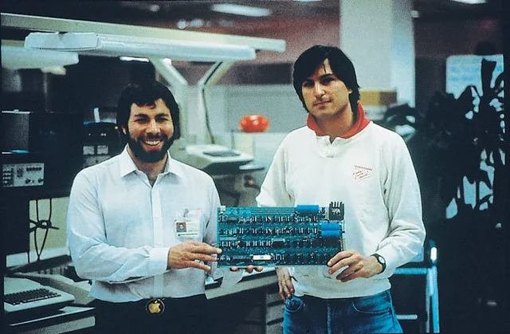

Workshop 软件
Linguista
所读 · 所思 · 所想
Library
进入 Library
AlpacaNotes
Hinbox
what’s old
科学 · 技术 · 实践
Workshop

浏览原创项目的用途、实现方式与技术更新，并进入公开仓库。
Bookmarks
精心整理的阅读清单与个人知识库，涵盖技术探索与设计美学的珍贵碎片。
About
分享个人的所读、所思与所想。通过跨学科的视角，观察数字时代的极简主义与结构化表达。致力于知识边界的无缝对接。